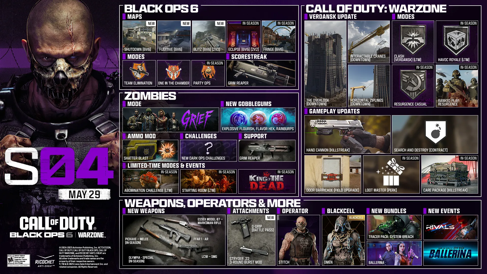

Bienvenue sur l'Aide Black Ops 6 Zombies
Découvrez les armes miracles des différentes cartes !
🆕 Nouveautés
- Mise a jour :
- Actualité Black ops 6
- Ajouts des catégories :
- Janus Tower
🆕 Actualité Black ops 6
- Saison 4 Disponible !
- Résumé du contenu Multijoueur
Cinq cartes MJ : Déployez-vous en terres islandaises avec trois nouvelles cartes disponibles au lancement : les cartes Standard 6v6 Shutdown et Fugitive ainsi que la carte Strike Blitz. À la mi-saison, faites la fête dans Eclipse et découvrez une version revisitée de Fringe.
Nouveaux modes et modes de retour : Ramassez des plaques pour épuiser les réserves ennemies dans Élimination d'équipe, nouvelle variante amusante d'Élimination confirmée. Faites en sorte que chaque munition compte avec le retour d'Une balle chargée et passez en mode détente dans le mode à durée limitée Opérations de groupe.
Équipement supplémentaire : Apparue dans le premier Black Ops, la série de points Faucheuse enverra valser vos adversaires grâce à son explosivité.
Partie classée - Saison 4 : Mesurez-vous à la crème de la crème, accumulez les victoires et montez de rang dans une nouvelle saison de Parties classées Multijoueur, avec des récompenses inédites et le droit de vous vanter.
Résumé du contenu Zombies
Lutte revient !
Plongez dans cette bataille compétitive épique en 4v4 sur toutes les cartes. Survivez aux assauts ennemis et sécurisez des zones de capture pour infliger des malus à l'équipe adverse. La dernière équipe encore debout l'emporte !
Contenu de gameplay supplémentaire :
Détruisez les morts-vivants blindés et créez des explosions à effet de zone avec le mod de munitions Souffle fracassant, savourez les effets surprenants de trois nouveaux GobbleGums, et provoquez des explosions encore plus dévastatrices avec le lanceur de soutien Faucheuse.
Nouveaux modes et plus encore :
Débloquez des récompenses cachées avec davantage de défis Opérations secrètes, affrontez une Abomination surpuissante, survivez aussi longtemps que possible dans le mode à durée limitée Salle de départ, et annihilez les zombies pour monter au classement et obtenir gloire et récompenses !
